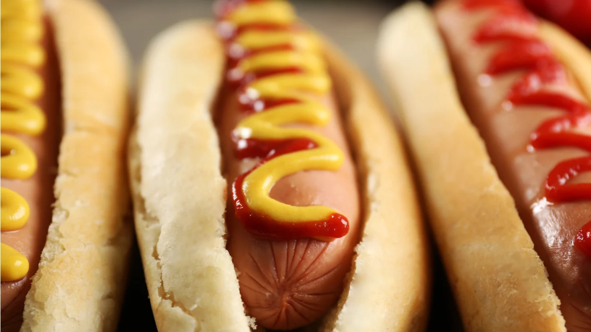

Panchos

Recipe
After the boom of hamburgers and hamburger joints, it is now time for hot dogs, a food as noble as it is versatile. The pancho is now treated with respect, care and reversion to transform that simple sausage in a vienna bread into a complete and complex meal.
Ingredients:
- Vienna sausages
- Bread for pancho
- Coarse salt
- Water
- Optional toppings
Steps
- In a pot we put the handful of salt. Add half of the water and bring to a boil.
- While the water is boiling, cut the bread in half. It is important not to throw the bags away.
- Once boiling, place the sausages in the water.
- We wait approximately 3 minutes and remove the sausages and place them in the buns.